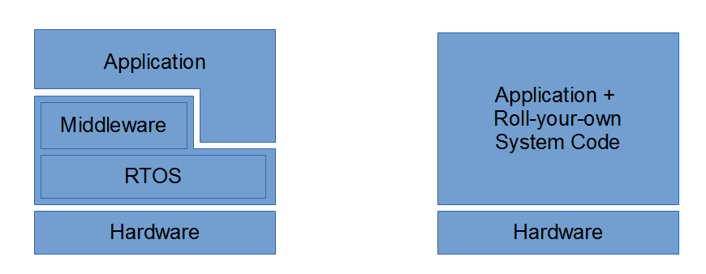

什么时候需要用RTOS？
想写篇关于小资源的嵌入式系统的编程架构搭建的文章，但一下子想不出从哪开始下笔。
毕竟技术是为了解决问题而存在的，要说清楚“怎么做”，得先知道“需要解决什么问题”。
这时候想起N年前看过个叫Mark3OS的RTOS的文档把“RTOS帮我们做了什么”这个问题给讲清楚了，于是直接翻译出来吧，下一篇会在此基础上扩展地讲。
P.S. 这个项目似乎已经停止维护了，网站也关了，毕竟没什么人用。。
原文：Mark3 RTOS的参考文档“7.When should you use an RTOS?”章节
什么时候需要用RTOS？
系统代码（system code），可以说实现的是管理、同步和调度所有运行在CPU上的应用程序的资源（CPU时间，内存，外围设备等）的逻辑。事实上，在嵌入式系统上运行的代码中，很大一部分都属于系统代码。无论要实现的功能有多简单，这部分逻辑可能会和应用程序代码混在一起（在裸机系统中），也可能作为一种形式良好的基础设施出现（基于RTOS），系统代码始终存在，有它在就会有开销。
在设计嵌入式系统时，工程师必须决定采用哪种方法：裸机或RTOS。他们各有优点和缺点——在选择之前，理智的工程师总会在特定的应用场景中，对每种方法的优缺点进行全面分析。
以下框图说明了“裸机系统架构”与“基于RTOS的架构”之间的差异：

如你所见，RTOS（及相关的中间件和库）captures a certain fixed size.
概括地说，裸机系统通常具有以下优点：系统代码开销很小——但随着应用程序的复杂性增加而显着增长。在某个时点上，为在这样的系统上运行的应用程序添加更多功能变得极其困难，且容易出错。在这个转折点上，用于解决裸机系统限制的代码成本，超过了使用RTOS本身的成本。裸机系统通常也需要更长的时间来实现，因为系统代码必须从零开始实现（或从现有代码中派生），这样实现的代码也往往不那么可移植，因为在基于RTOS的系统中，系统中的特定元素会被严格地分开，内核和驱动程序移植时，应用程序代码通常是平台无关的。
相反，基于RTOS的系统会预先产生稍高的固定成本，但随着应用程序的复杂性增加，比起裸机系统更容易扩展。对于简单系统，使用RTOS可以缩短应用程序开发时间，但可能会导致应用程序无法适应某些资源受限的微控制器。RTOS还可以使应用程序的尺寸（相对于裸机系统）增长的更慢——特别是应用同步机制和明智的IPC。因此，RTOS使得与应用程序开发更“敏捷”——迭代地添加特性和功能，而不必总得重构底层系统。
一些因素可能比其他因素更重要：项目的要求，规格，时间表，片子的选择和预计的生产数量都应该考虑进来，以决定是否采用裸机或RTOS。
做决定的时候，先思考以下问题：
• 要做什么应用？
• 需要多高效？
• 需要多快？
• 需要多小?
• 需要多快的响应速度？
• 目标系统上有多少code space、RAM以及其他资源？
• RTOS需要占用多少资源?
• 应用需要占用多少资源？
• 需要多长时间才能交付？
• 计划要生产多少件？
超级循环和他们的局限性
介绍超级循环
在我们开始研究RTOS之前，有必要先了解开发人员，用于管理嵌入式系统中任务执行的最常见设计模式之一——超级循环（Superloops）。
基于超级循环的系统，有利于将系统控制逻辑直接嵌到应用程序代码中，通常伪装在简单、高内存效率（代码和RAM空间）下。对于简单的系统，超级循环肯定可以完成工作。但是，它们有些严重的局限性，并不适合各种项目。在大多情况下，你可以通过使用超级循环侥幸成功——特别是在极其受限的系统中，但通常它们并不是可重用、可移植的代码的坚实后盾。
尽管如此，这里还是提供了各种示例——从超简单的系统、协作式系统，到抢占式多任务处理系统，这些示例都是我编写过的，或是看过的固件。
简单循环
让我们从可能是最简单的嵌入式系统设计开始——一个单任务死循环：
1 | int main() |
循环内的代码将永远运行一个函数。没什么，对吧？但是你可能会惊讶于使用基本相同的机制实现了多少嵌入式系统固件——这没有任何问题，但它并没有那么有趣。
虽然这个程序的执行时间线同样无聊，但为了完整起见，还是对其描述：
尽管它很简单，但我们可以看到一些核心操作系统概念的开端。这里的while(1)语句，在逻辑上可以被视为操作系统内核——这一个控制语句确定哪些任务可以在系统中运行，并可以通过这些语句控制这些任务的执行条件。说到底，这就是内核的重要组成部分——一种控制应用程序代码执行的机制。
第二个概念是任务，这是用户提供的应用程序代码，是为了某些特定目的而执行的代码。在例子中，Do_something()代表该任务——可以是监控血压，读取传感器并将其数据打印到terminal，或播放MP3以及任何在嵌入式系统上能做的事情。简单地在主while循环中依次添加其他任务，可以构建一个简单的循环多任务系统。请注意，在此示例中，CPU始终忙于运行任务——CPU在任何时候都无空闲，这意味着它可能会大量耗能。
虽然我们在概念上涉及两个独立的代码段（操作系统内核和一组正在运行的任务），但它们在逻辑上并不是分开的。操作系统代码与应用程序无法区分开。它就像一个单细胞生物——一切都挤在一个不可分割的单位的墙里; 并根据本能执行特定的功能。
中断驱动的超级循环（Interrupt-Driven Super-loop）
在前面的例子中，我们实现了一个无法控制任务执行的系统——它只是不停地运行。无法控制任务何时可以执行（换个角度，更重要的是什么时候不能执行），这极大地限制了系统的用途。假设您只希望您的任务每100毫秒运行一次——在之前的代码中，您必须在任务执行结束时添加硬编码延迟，以确保代码仅在应用时运行。
幸运的是，有一种更优雅的方式来做到这一点。在这个例子中，我们介绍了同步对象（synchronization object）的概念。同步对象是一些数据结构，它是操作系统的一部分，告知任务何时可以运行，并且在许多情况下包括同步事件特有的特殊数据。这里有一整套同步对象，我们稍后会介绍。在这个例子中，我们使用最简单的同步原语——全局标志（global flag）。
随着同步的增多，就需要使用事件驱动系统了。如果你正在对一个MCU编程，你通常可以使用大量外设——定时器，GPIO，ADC，UART，以太网，USB等。所有这些外设都可以配置为通过中断为您的系统提供激励，这样就可以让这些激励成为我们的程序中的do_something()的if-and-only形式的触发器。
1 | volatile K_BOOL something_to_do = false; |
你拥有了一个事件驱动的系统，它用了一个全局变量，随着中断的发生，我们的任务同步地执行。虽然这依旧只是个裸机程序，它把操作系统该做的事嵌到应用程序中，但它能在将复杂功能引入我们的系统。
这段代码中，要注意的第一件事就是全局变量something_to_do就是我们同步对象，当某个外部事件发生中断，触发My_Interrupt_Source()这个ISR（中断服务函数）时，main()程序流被打断，ISR将something_to_do置为true后，main()程序流继续执行，此时Do_something()任务被执行。
这里多了个空闲函数（idle function）的新概念。通常，在运行事件驱动系统时，有时CPU没有运行应用程序任务。为了最大限度地降低功耗，CPU通常会有相关的指令或者寄存器，在没有任何操作时禁用系统的一些功能。通常，通过中断或其他外部输入，处于睡眠状态的系统可以快速重新激活，恢复正常运作。
译者注：
比如在ARM内核下，WFI指令（即Wait For Interrupt）可以使core停止工作，直到IRQ中断产生，core才会继续工作
针对低功耗优化，厂商一般会提供一套用户可操作的寄存器，可以进行更深层次的优化，比如可以把系统时钟、外设电源暂时关掉（甚至允许把RAM的电源关掉，那就需要用户在恢复工作时重建RAM内容了），一般来说，从这种低功耗模式下恢复会花上更多时间，低功耗效果也会比单单暂停掉内核要好上很多
我们可以在ISR内调用Do_something()——但这通常不是一个很好的解决方案。一般来说，我们在中断中花费的时间越多，期间就会有越多中断被禁用，这会导致那些中断的处理被延迟。现在，在这个系统中，只有1个中断源、1个任务，这样做可能不会造成问题，但如果Do_something()需要几秒钟才能完成，而系统还需要处理其他的中断，长时间执行ISR导致其他中断不能被处理——在许多情况下，如果在处理第一个中断之前产生了两个相同类型的中断，其中一个中断事件将丢失。这在实时系统中可能是灾难性的，应该不惜一切代价避免。因此，一般最好使用同步对象，来把任务放到ISR之外推迟处理。
在此示例中，隐式导入的另一个OS概念是任务优先级。发生中断时，main()中代码的正常执行被抢占，控制被交换到ISR（直到运行完成），然后控制交回到之前main()中被打断的位置。“中断优先于正在运行的程序”说明main在概念上是一个“低优先级”的任务，而所有ISR都是“高优先级”任务。在这个例子中，我们的“高优先级”任务通过设置一个变量，告诉我们“低优先级”任务，它可以做一些事情。我们将在下一个示例中进一步研究任务优先级的概念。
抢占是嵌入式系统中的另一个关键原则。这是一个概念，即无论在中断发生时CPU正在做什么，它都会被停止、缓存当前状态（称为“上下文”，英文context），然后处理高优先级事件。随后，恢复被停止的任务的上下文，并继续执行。我们会经常提到“抢占”（preemption）的概念，因为它经常出现在基于RTOS的系统中。
协作式多任务（Cooperative multi-tasking）
下一个示例引入协作式多任务，进一步扩展前一个示例：
1 | // 位域用于表示3个不同的任务 |
这个系统与我们以前的系统非常相似——但差异值得讨论。首先，我们从多个中断源获得激励：每个ISR负责在我们的全局事件标志中设置一个位，然后用于控制main()内部各个任务的执行。
我们可以看到基于if / else if结构的逻辑，在主循环内明确给出了任务优先级。只要event_flags被置位，首先尝试执行的是Task1，当Task1没置位时，将尝试执行Task2，之后是Task3。这样的逻辑提供了优先级的概念。但是，因为这些任务都在同一个上下文中（它们只是由主控制循环调用的不同函数），所以我们在处理中断时没有抢占的概念。
这意味着，如果我们在Task2执行的过程中，置位Task1事件标志，CPU仍然必须在Task1运行之前完成Task2的处理。这就是把这种调度方式称协作式多任务的原因：我们可以拥有任意数量的任务，但这些任务需要及时地返回到main函数中，否则系统的实时性能会被那些优先级低、执行时间长的任务拖累。
这是最受欢迎的Os-baked-in-the-application方法之一，并广泛用于各种实时嵌入式系统。
协作/抢占混合式多任务（Hybrid cooperative/preemptive multi-tasking）
这是超级循环设计的终级变种，利用软件触发的中断来模拟协作/抢占混合式多任务系统，请看以下示例代码：
1 | // 位域用于表示高优先级（high-priority）任务 |
在此示例中，中断中，高优先级事件被置位的同时，也会调用软件中断SWI()而触发High_Priority_Tasks()，从而允许抢占main()中执行的任一低优先级任务，切换到高优先级任务的处理程序。如果CPU已在执行ISR，则当前ISR完成后，控制权交由高优先级的中断处理程序。
进入高优先级ISR后，所有中断（软件中断除外）都会重新启用，这允许此中断被其他中断源抢占，即中断嵌套。因此，我们最终得到两个不同的执行上下文（main()和HighPriorityTasks()），其中高优先级组中的所有任务都能抢占main()中的任务，并且将任务执行完毕后，才把控制权交回main()中的任务。这是一个非常基础的抢占式多任务场景，近似于具有两个不同优先级线程的“真实”RTOS系统。
超级循环存在的问题
如前所述，很多现实中的系统都是使用超级循环设计实现的，它们涉及的控制逻辑有限且容易理解，但它们并非没有问题。
隐性的开销
很难计算超级循环的开销，和变通地实现阻塞调用、调度和抢占所需的代码。一方面开销是，变通地实现（通常要用到状态机）这些机制的逻辑、可维护性方面付出的代价（比如以执行时间而不是逻辑操作来划分语句块）都是隐性的成本。在中等规模固件的系统中，这方面的开销可能会超过一些功能不错的RTOS的开销，并且可维护性的不足，直接体现在了调试和分析方面的生产力损失。
强耦合（Tightly-coupled）的代码
由于控制逻辑与应用程序逻辑紧密耦合，因此必须非常小心，避免应用程序和系统代码之间的分离被破坏。定时器、状态机和平台相关的控制机制（architecture-specific control mechanisms），会用来避免（或模拟）抢占，这些都可能导致问题。后果就是，许多超级循环程序没有很好地模拟底层系统，代码难以移植。抽象层可以降低风险，但应该非常小心地将应用程序代码与系统代码完全分离。
调用不能被阻塞
在超级循环环境中，不存在阻塞调用或阻塞对象。在其他上下文中的任务需要事件驱动的I/O操作时，正在执行的任务无法中途暂停——总得等它们执行完。如果使用忙等待和轮询作为替代，则会增加延迟并浪费CPU周期。因此，需要额外的代码来解决缺少阻塞的问题，通常是通过状态机。在比较大的系统中，可能会增加代码大小和CPU的额外开销。
难以保证响应能力
如果没有多级优先级，则很难在不作分析、调整的情况下保证一定程度的实时响应能力。基于优先级的协作式多任务系统中，实时性由执行时间最长的任务决定。必须注意将任务分解为适当大小的块，以确保更高优先级的任务能够及时运行，也就是说，在系统中添加新任务时，必须由人工来考虑。再者，将任务人工细分为基于时间的一个个部分，增加了额外的复杂性，使代码更多、更难以理解和维护。
有限的抢占能力
如示例代码所示，在超级循环中获得抢占的方法是使用嵌套中断。虽然这对于两个优先级并不是不可靠的，但如果需要添加更多优先级，情况会变得复杂。在这种情况下，需要手动跟踪中断嵌套，分离可在给定优先级循环内运行的任务集——并且更难以避免死锁。
译注：作者说的“死锁”、“手动追踪”可能让人难以理解
读者可以想象一下main中任务和更高优先级的任务都使用了相同的硬件资源，如果忘了写额外代码做临界保护，后果可能是毁灭性的，
出现这种问题后，可行的解决方法是加临界区保护，操作资源时禁止高优先级调度（比如直接禁用中断）；也可以将这两个任务放到同一优先级下，让他们自然互斥，
但手动管理这些任务，可操作性是很差的，随着功能的增多，手动管理的难度会不断增加。